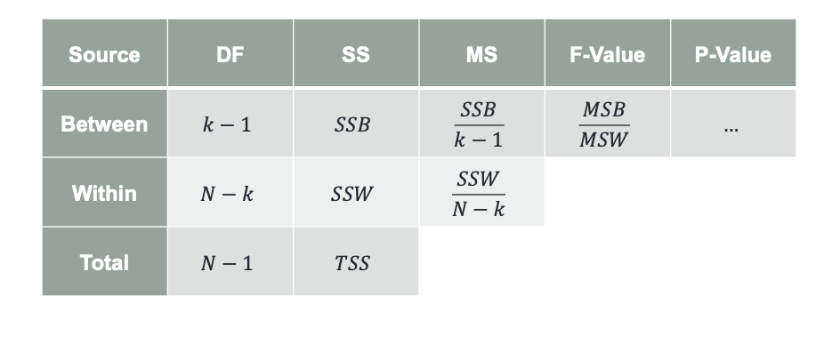
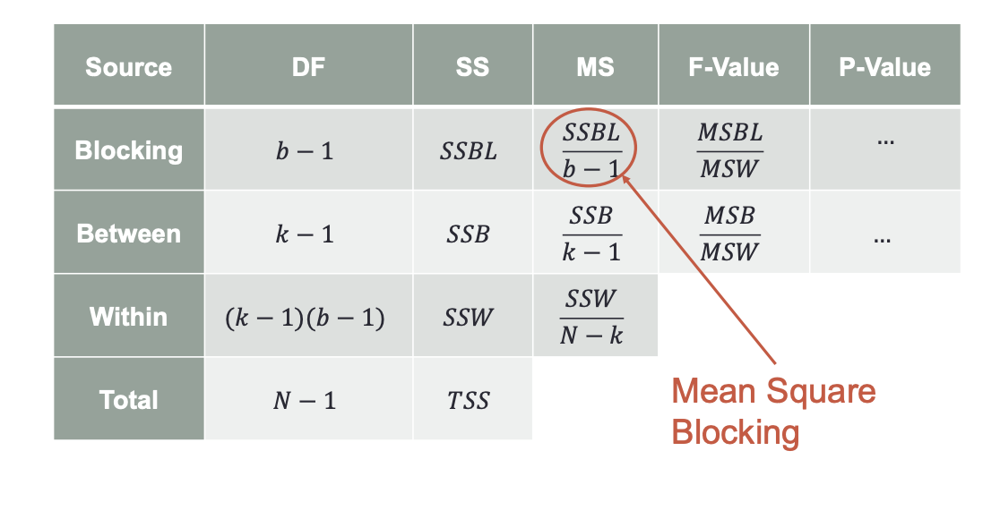

One sample hypothesis tests are focused on one population parameter. However, sometimes we would like to compare multiple parameters against each other. This is the foundation of an analysis called analysis of variance (ANOVA).
Standard error changes using separate population variances
1.6 Example - Comparing Two Means
A human resources manager of a large business firm is trying to determine if there exists gender bias in the pay scale of employees at the company. The manager assumes the variability of salaries between genders is different, but wants to test if makes have higher average salary than females. The manager samples 62 males and 77 females. The sample of males had an average salary of $87,547 with a s.d. of $5,910. The sample of females had an average salary of $78,289 with a s.d. of $6,276. Run a hypothesis test.
Code
# H_a: mu_1 > mu_2 with mu_1 representing mean of malest <- ((87547-78289) -0) /sqrt(5910^2/62+6276^2/77)sprintf("Test statistic equals %.3f", t)
Previously we needed to assume the relationship between two variances to conduct test between means. We can run a hypothesis test comparing two variances to tell us which means test to use.
Keep in mind there is no formal statistical test for comparing standard deviations–only variances.
The numerator is the larger standard deviation between two samples
2.1 Example - Comparing Two Variances
A human resources manager of a large business firm is trying to determine if there exists gender bias in the pay scale of employees at the company. The manager has no assumption about the variability of salaries between genders, but wants to test if makes have higher average salary than females. The manager samples 62 males and 77 females. The sample of males had an average salary of $87,547 with a s.d. of $5,910. The sample of females had an average salary of $78,289 with a s.d. of $6,276. Run a hypothesis test.
Need to first test if variances are equal or not before running test of means
At a significance level of 0.05 we would not reject the null hypothesis that our variances are different.
3 Matched / Paired Differences
Some instances where a paired difference (matched) sample is used to control for sources of variation that might distort conclusions
3.1 Example - Sources of Variation
You have SAT scores for both boys and girls from a local school
You believe that the boys and girls have the same avg. test score, but want to test otherwise
Of the 39 females, 32 of them are part of the accelerated math and language arts program
Of the 39 males, 11 of them are part of the accelerated math and language arts program
Matched samples are samples selected such that each data value from one sample is related (or matched / paired) with a corresponding data value from a second sample
In the previous example, we would match boys and girls who were in the accelerated program and ones who were not.
Our focus turns from individual values in the populations and to the values of the differences in the populations. All assumptions and calculations are done on the differences, not individual samples.
A human resources manager of a large business firm is trying to determine if there exists gender bias in the pay scale of employees at the company. The manager samples 51 pairs of male and female employees where the pair has the same job title and experience at the company. The average difference in salaries is $2,131 with a s.d. of differences of $7,898. Run a hypothesis test.
Code
t <- (2131-0) / (7898/sqrt(51))sprintf("Test statistic: %.3f", t)
[1] "Test statistic: 1.927"
Code
df <-50pt(t, df, lower.tail =FALSE)
[1] 0.02984447
At a significant level of 0.05 we reject the null hypothesis that there is no gender bias in the pay scale of employees at the company.
A researcher at a large university on the west coast is interested in comparing some factors between upperclassmen (juniors and seniors) and underclassmen (freshmen and sophomores) in the undergraduate school. The researcher believes that more experience in college may help students perform better in the classroom. The researcher is interested in testing if the average GPA of upperclassmen is greater than the average GPA of underclassmen. The researcher sampled 89 underclassmen with an average GPA of 2.75 with a s.d. of 0.91 and 102 upperclassmen with an average GPA of 3.07 and a s.d. of 1.02.
The researcher did not use matched sampling. Do you agree with their decision?
No. There are other factors that can influence GPA like major that we could match on for equal comparison
Conduct a hypothesis test on the variances to see if they are equal.
Based on a significance level of 0.05 we do not reject the null hypothesis. We do not have enough evidence to say that the variances between the two populations is different.
Conduct the appropriate hypothesis test on the means to see if they are equal.
t <- ((3.07-2.75) -0) / (s_p *sqrt(1/102+1/89))sprintf("Test Statistic: %0.3f", t)
[1] "Test Statistic: 2.274"
Code
pt(t, 89+102-2, lower.tail =FALSE)
[1] 0.01205843
At a significance level of 0.05 we reject our null hypothesis that more experience in college does not lead to higher GPA performance.
4.3 Example Continued
Same researcher as before also believes that a higher proportion of upperclassmen live off campus compared to the proportion of underclassmen. While sampling the students in the previous sample, the researcher also asked whether the student lived off campus. Of the 89 underclassmen sampled, 27 lived off campus. Of the 102 upperclassmen sampled, 65 lived off campus.
Construct a 95% confidence interval for the difference between the proportion of upperclassmen living off campus to the proportion of underclassmen living off campus.
At a significance level of 0.0005 we reject the null hypothesis that the proportion of upperclassmen living off campus is not greater than the proportion of underclassmen living off campus.
Can you compare the confidence interval and the hypothesis test?
No as the hypothesis test is one-sided while the confidence interval is two-sided.
5 Analysis of Variance
The comparison of more than two categories of parameters is called analysis of variance.
5.1 One-Way ANOVA
Simplest form of ANOVA is the one-way model.
Independent samples are obtained from \(k\) levels (categories) of a single factor (explanatory variable), then testing whether the \(k\) levels have equal means.
Similar to regression analysis in that we have one categorical variable predicting continuous response
\[
H_0: \mu_1 = \mu_2 = \cdots = \mu_k
\]
\[
H_a: \text{At least one mean different than another}
\]
5.1.1 Assumptions
Normally distributed categories
Equality of variances between categories
Independence
Test Statistic:
\[
F = \frac{s_{max}^2}{s_{min}^2}
\]
The p-value is calculated from Hartley-s F-max distribution which isn’t covered here.
5.1.2 Sources of Variation
Within-Sample Variability
Variability in response that exists within category of a variable
What you categories cannot explain (like SSE)
Between-Sample Variability
Variability in response that exists between categories of a variable
What you categories can explain (like SSR)
5.1.3 Sum of Squares Within
Within sample is variability that you cannot explain by just knowing which category your observation falls into
flowchart LR
A(Total Variability) --> B(SSR + SSE)
B --> C[Variability Between Groups]
B --> D[Variability Within Groups]
5.3 ANOVA F-test
\[
\begin{align*}
H_0&: \mu_1 = \mu_2 = \cdots = \mu_k \\
H_a&: \text{At least one mean different than another}
\end{align*}
\]
Test follows an F-distribution and is calculated as
\[
F = \frac{(\frac{SSB}{k - 1})}{(\frac{SSW}{N - k})}
\]
\(k\) categories would be \(k - 1\) variables in a regression model
\(N\) is the total sample size across all categories
5.4 One-Way ANOVA Table

One-Way ANOVA Table
5.5 One-Way ANOVA Example
A marketing analyst is interested in testing the effectiveness of 4 different commercials describing their company’s new product. The marketing analyst randomly assigns a commercial to each of 32 cities across the country and measures the average increase in sales of their new product at their stores. The marketing analyst wants to test if there is a difference in sales between the commercials.
Fill in the blanks on the ANOVA table.
Source
DF
SS
MS
F-Value
P-Value
Between
3
2.3236
0.775
22.794
Within
28
0.9587
0.034
Total
31
3.2823
Code
pf(22.794, 3, 28, lower.tail =FALSE)
[1] 1.128339e-07
6 Multiple Comparisons
If you reject the null hypothesis on the F-test then you have evidence that at least one category is different.
Once a difference is detected, we have to test each individual pair of categories to find where the differences are.
This process is called multiple comparisons or ad-hoc testing.
6.1 Multiple Comparisons Problem
You have a test which makes an error 5% of the time when performed.
What is the probability of making an error on your first test?
5%
What is the probability of making an error on your second test?
5%
What is the probability of making at least one error in two tests?
9.75%
6.1.1 Different Types of Error
Comparison-wise error rate
Error rate for each individual test or comparison
Experiment-wise error rate
Error rate across all comparisons–proportion of experiments/comparisons in which at least one error occurs
Tests and confidence intervals usually control for comparison-wise, \(\alpha\), but ideally want to control for experiment-wise.
6.2 Multiple Comparison Methods
Number of Groups Compared
Number of Comparisons
Experimentwise Error Rate
2
1
0.05
3
3
0.14
4
6
0.26
5
10
0.40
\(EER \leq 1 - (1 - \alpha)^{nc}\) where \(nc\) is the number of comparisons
flowchart LR
A(Control Comparisonwise Error Rate) --> B(Pairwise t-tests)
C(Control Experimentwise Error Rate) --> D[Compare All Pairs Tukey]
6.3 Tukey’s HSD Test
HSD represents the Honest Significant Difference or Critical Range
We use Tukey’s when we consider pairwise comparisons
Experimentwise error rate is equal to \(\alpha\) when all pairwise comparisons are considered
Experimentwise error rate is less than \(\alpha\) when fewer than all pairwise comparisons are considered
Replaces margin of error calculation for a typical confidence interval for a difference in means with an adjusted margin of error
\[
\text{Critical Range (Margin of Error)} = q_a \times \sqrt{\frac{MSW}{2} \times (\frac{1}{n_i} + \frac{1}{n_j})}
\]
\(q_a\) is from studentized range distribution
7 Fixed vs. Random Effects
Inference drawn from ANOVA depends on whether the factor levels in the procedure are selected on purpose or randomly.
Fixed Effects
Inferences extend only to factor levels being analyzed because the levels were purposefully chosen as levels of interest
Random Effects
Inferences extend beyond just factor levels being tested because the levels were randomly selected from a larger group of levels
7.1 Randomized Blocking
7.1.1 Sources of Variation
Generally, comparing many population means works well in certain situations
There are some instances where blocking is used to control for sources of variation that might distort conclusions
7.2 Example
The same marketing analyst as before is interested in testing the effectiveness of 4 different commercials describing their company’s new product. The marketing analyst randomly assigns a commercial to each of 32 cities across the country and measures the average increase in sales of their new product at their stores. The four commercial average sales were $1.2M for commercial A, $1.8M for B, $0.76M for C, and $1.3M for D. Where are the differences in sales?
What if the new product is a warm coat and a majority of the cities seeing C were warm weather cities?
The same marketing analyst as before is interested in testing the effectiveness of 4 different commercials describing their company’s new product. Split (block) country into 8 regions. Show each commercial to one city in each region. Sample size still 32.
7.3 Assumptions
Same as One-Way ANOVA:
Normally distributed categories
Equality of variances between categories
Independence
Blocking can come from collection of data as well as the analysis of the data as a variable being added to the model.
When a new variable is added, we get a new source of variation–sum of squares of blocking.
The sum of squares comes out of the error sum of squares and gets brought into the model–the SSW shrinks even more.
7.5 Blocking ANOVA Table

Blocking ANOVA Table
The F-Value in the Blocking row is the F-test with \(H_a\) at least one block mean not equal
7.6 Post-hoc Analysis for blocking
Tukey-Kramer ANOVA comparisons do not work for blocking.
Instead, we have Fisher’s Least Significant Difference. Fisher’s LSD is a recalculation of the margin of error for the difference in means confidence interval just like Tukey’s critical range.